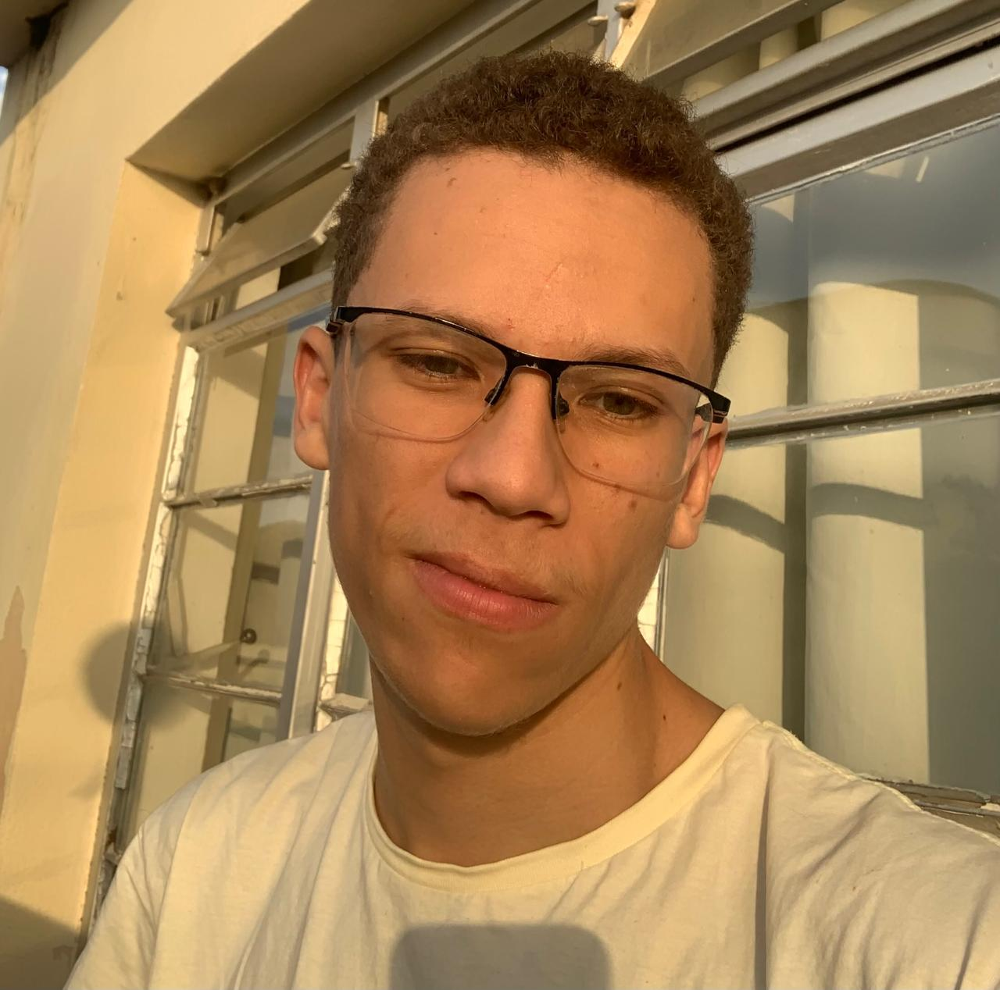

Meu nome é Natanael Félix Julio, tenho 20 anos e curso Análise e Desenvolvimento de Sistemas (ADS). Atualmente, estou iniciando minha trajetória no mercado da programação, estudando HTML, CSS, JavaScript e Git, com foco no desenvolvimento web.
Ainda não possuo muita experiência profissional na área, mas estou em busca de oportunidades que me permitam aprender na prática, adquirir experiência e evoluir constantemente como desenvolvedor. Tenho dedicação, vontade de aprender e interesse em criar interfaces modernas, responsivas e funcionais através da tecnologia.
Além do frontend, também pretendo futuramente aprofundar meus estudos em desenvolvimento backend utilizando tecnologias como TypeScript e Node.js, buscando me tornar um desenvolvedor cada vez mais completo.

Conheça meus ultimos projetos